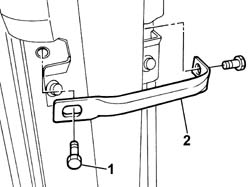
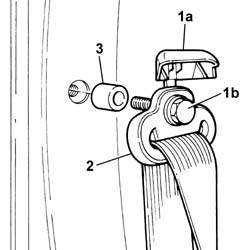
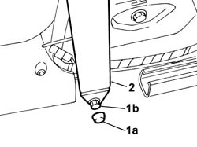
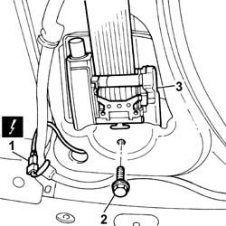

7065A12 front seat belt (one), lh or rh, with pretensioner on wheel - r r
- Path
- Procedures > 70 FITTINGS > 7065 SEAT BELTS AND ACCESSORIES > 7065A FRONT SEAT BELTS > 7065A12 front seat belt (one), lh or rh, with pretensioner on wheel - r r
- Kind
- repair procedure (removal / refitting; the operation number is the code)
- Applies to
- all engines; all production periods
- Interactive page
- https://sloeber94.github.io/elrnDB-fPnd/en/#/2753313
Applies to: all engines; all production periods
Applies to: all engines; all production periods
 Removing
Removing
 Refitting
Refitting7040L42 sill plate connection of one front door (1), lh or rh - r r
7040L40 front compartment scuff strip - r r
7040H36 central trim lower element - r r
1. Undo the retaining bolts.
2. Remove the seat belt tension bridge.

Applies to: all engines; all production periods
1. Open the guard (1a) and undo the fixing bolt (1b).
2. Release the upper branch from the seat belt and place it on the ground.
3. Recover the spacer.

Applies to: all engines; all production periods
1. Remove the plastic cap (1a) and undo the fixing bolt (1b).
2. Release the lower branch from the seat belt and place it on the ground.

Applies to: all engines; all production periods
1. Disconnect the electrical connection.
 | Name | Connector |
|---|---|---|
1 | Driver's seat belt pre-tensioner | Q20 |
| Name | Connector |
|---|---|---|
1 | Front passenger seat belt pretensioner | Q21 |
2. Undo retaining bolts
3. Remove the reel and pretensioner complete with seat belt.

Applies to: all engines; all production periods
Place the inertia reel seat belt with pretensioner in the special cabinet, resting it on a free surface.
Applies to: all engines; all production periods
Refitting
RemovingObserve the following precaution.
If a new seat belt with pretensioner is being fitted, position the labels. Remove the removable part of the adhesive label from the new pretensioner and place it in a special file containing the vehicle details (model, registration date, chassis number) and the serial number of the old module. This file should be kept for future checks. A new label is supplied together with the module, to be stuck on top of the existing one. However, it should first be perforated to indicate the month and 10 years after the year when the module is fitted (e.g. 2013 will correspond to 2003).
Place the reel with pretensioner complete with seat belt in position.
Tighten the bolt fixing the pretensioner to the recommended torque.
 | Fastening | Component | Ø | Value (daNm) |
|---|---|---|---|---|
- | Bolt | FRONT SEAT BELT PRETENSIONER. | M7/16' | 4.0 |
Connect the electrical connection.
| Name | Connector |
|---|---|---|
- | Driver's seat belt pre-tensioner | Q20 |
| Name | Connector |
|---|---|---|
- | Front passenger seat belt pretensioner | Q21 |
Position the lower branch of the seat belt and tighten the fixing bolt to the recommended torque.
| Fastening | Component | Ø | Value (daNm) |
|---|---|---|---|---|
- | Bolt | FRONT SEAT BELT | M8 | 2.0 |
Position the plastic cap on the bolt fixing the lower branch of the seat belt.
Place the upper branch of the seat belt and the spacer in position.
Tighten the bolt fixing the upper branch of the seat belt to the recommended torque and close the guard.
| Fastening | Component | Ø | Value (daNm) |
|---|---|---|---|---|
- | Bolt | FRONT SEAT BELT | M7/16' | 4.0 |
Place the seat belt tension bridge in position and tighten the fixing bolts.
7040H36 central trim lower element - r r
7040L40 front compartment scuff strip - r r
7040L42 sill plate connection of one front door (1), lh or rh - r r
Connect the battery terminals.
Check the operation of the Air Bag system using the Examiner or other diagnostic equipment.
Topics linked from this page (3)
- 7040H36 central trim lower element - r r
- 7040L40 front compartment scuff strip - r r
- 7040L42 sill plate connection of one front door (1), lh or rh - r r